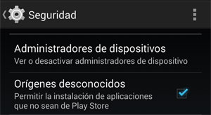

Instalación¶
Para instalar el programa, necesitará el archivo APK de la misma. Los archivos APK contienen aplicaciones para Android, empaquetadas y listas para instalar en su dispositivo.
Importante: Los pasos a seguir para instalar un archivo APK pueden variar ligeramente entre distintas versiones de Android y diferentes dispositivos. Si descubre que las instrucciones aquí proporcionadas no son suficientes o no se ajustan a su dispositivo, le recomendamos realizar una búsqueda online de las instrucciones precisas sobre como instalar un archivo APK en su versión de android.
Una vez que obtuvo el archivo APK del proveedor, deberá instalarlo en su dispositivo. Si es la primera vez que instala una aplicación desde un paquete APK, deberá ajustar la configuración de permisos en su dispositivo. Vaya a Menu -> Configuración -> Seguridad y marque la casilla “Orígenes desconocidos”, para permitir que su celular o tablet instale una aplicación que no provenga de Google Play.
{kind=link}
Si tiene el archivo APK en su computadora, deberá conectar su dispositivo a la misma, normalmente utilizando un cable USB. Se le preguntará si desea cargar su dispositivo o conectarlo como dispositivo multimedia (media device). Elija la segunda opción. Luego, simplemente busque la carpeta de su celular o tablet en su computadora y copie el archivo APK en la carpeta que decida en su dispositivo Android. Luego, busque la ubicación del archivo en la carpeta correspondiente de su celular o tablet. Encuentre el archivo APK, presionelo, y elija instalar. Android lo guiará por el proceso de instalación.
Una vez instalada la aplicación, puede leer la sección de Configuración para poder utilizarla correctamente.